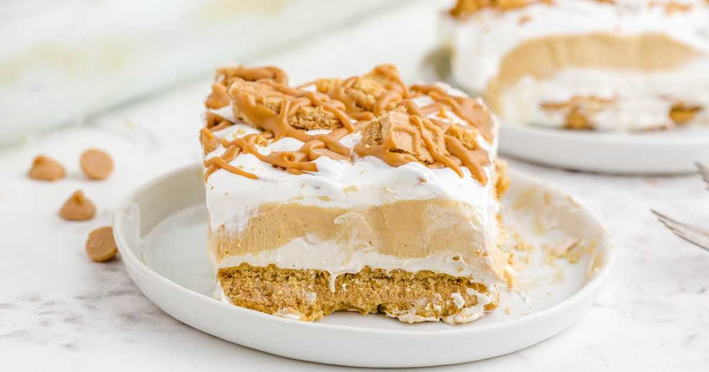

Butterfinger Lasagna

Description
The mouth-watering dessert is an absolute delight. A simple, no-bake indulgence with layers of Nutter Butter cookies, butterscotch pudding, peanut butter cheesecake mousse, and crushed Butterfingers!
Ingredients
- 1 Box instant butterscotch pudding
- 2 cups + 3 tablespoons milk divided
- 8 ounces cream cheese
- 1/2 cup peanut Butter
- 1/2 cup powdered sugar
- 1 tub whipped topping, divided
- 24 nutterbutter cookies
- 7 fun-sized butterfingers chopped
- Melted peanut butter
Steps
- In a medium bowl, whisk the pudding mix and 2 cups of milk together. Set aside to thicken while you prepare the peanut butter filling.
- In the bowl of a stand mixer fitted with the paddle attachment, beat together the cream cheese, peanut butter, sugar, and 3 Tablespoons of milk until smooth. Fold in 1 1/2 cups of the whipped topping.
- To assemble, start by lining the bottom of a 8x8-inch square dish with half of the Nutter Butter cookies. Spread 1/2 of the pudding evenly on top of the cookies. Top with dollops of the peanut butter filling, then spread into an even layer. Sprinkle half of the chopped Butterfingers over the filling. Repeat the layering with the remaining cookies, pudding, and peanut butter filling. Spread the rest of the whipped topping on top, then sprinkle with the last of the chopped Butterfingers.
- Cover and refrigerate overnight to allow the cookies to soften up for easier cutting. Serve with a drizzle of melted peanut butter, if desired.